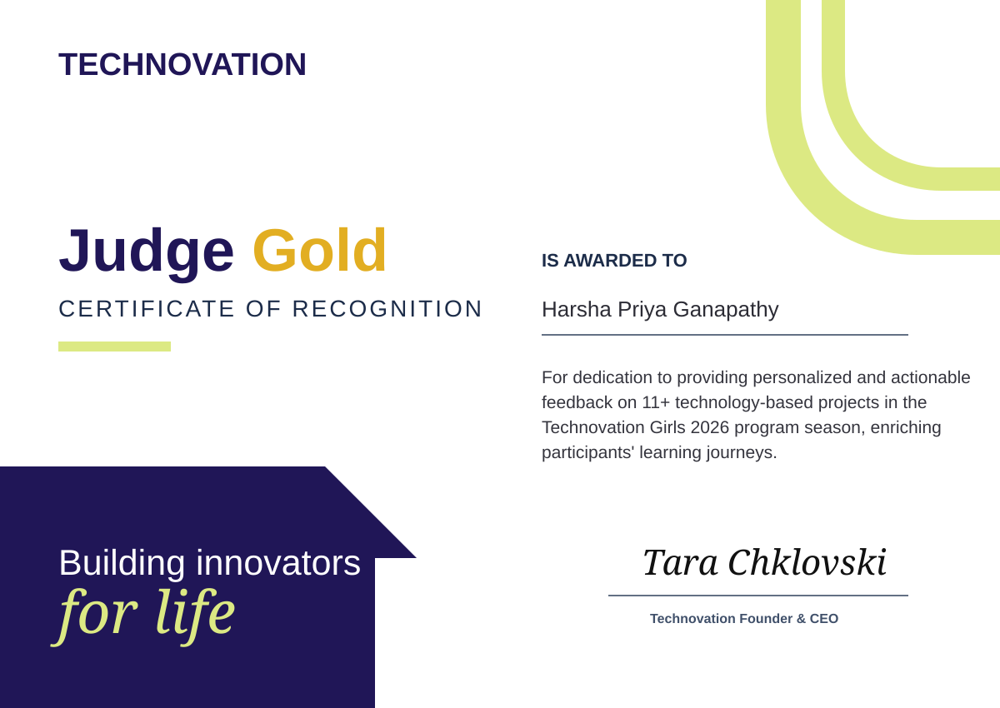
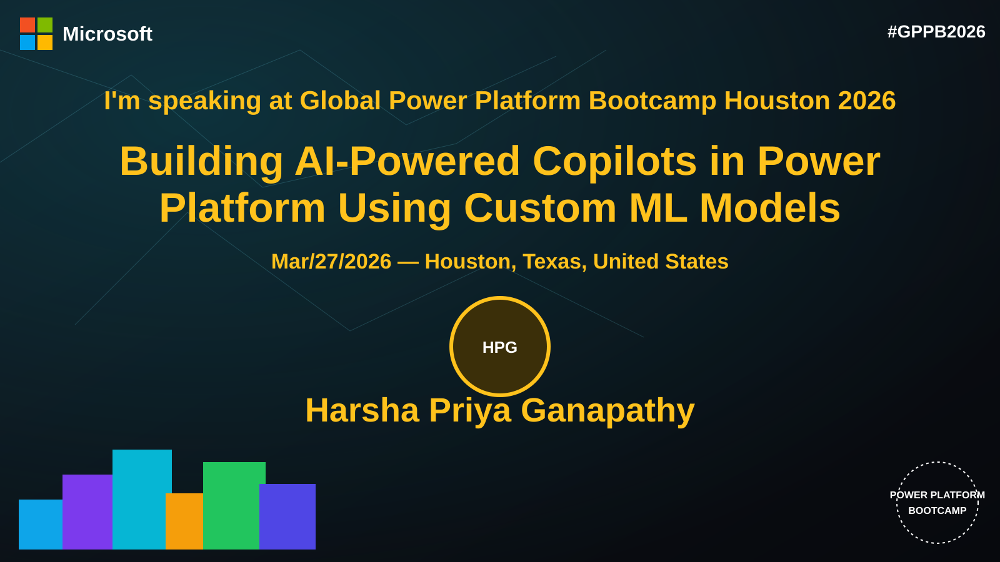

Image Memorability Classification
Visual memory schema and computer-vision techniques for image memorability.
An interactive professional dossier for recruiters, researchers and evidence review—career case files, AI projects, publications, judging, speaking, open source, credentials and technical achievements.
Tap + to expand responsibilities, technical scope and stack.
Case studies plus direct GitHub and live-build links.
Direct paper/DOI access with research context.
Visual memory schema and computer-vision techniques for image memorability.
Multi-task deep-learning framework for jointly forecasting activity and pedestrian movement.
Methodology →DDPG, MLP, Random Cut Forest and XGBoost for adaptive photovoltaic control.
AI-assisted personalized career guidance and decision support.
Facial recognition, role-based dashboards, resource booking and analytics.
Visual previews are shown for assets already stored in the repository.

Judging · 2026Gold recognition for judging 11+ technology projects and actionable feedback.
Open evidence viewer →
Speaking · 2026Building AI-Powered Copilots in Power Platform Using Custom ML Models.
Open speaking record →Contributor, Project Ambassador and AI/ML Explorer recognition.
Open evidence →Cloud, AI/ML, GenAI, IoT and cybersecurity mentoring.
Open record →Student coding guidance during Feb–Mar 2025.
Open record →Acceptance/participation evidence supplied; original binary graphic can replace this card when repository binary upload is available.
AWS AI & ML Scholars · Cohere Labs Open Science · BITS Pilani AI/ML/IoT/Cybersecurity research · Deep-learning and computer-vision research.
AWS Cloud Masterclass (Jan 25, 2026) · AWS Cloud Club Mentor · GSSoC Contributor · GSSoC Project Ambassador · GSSoC AI/ML Explorer · Global Power Platform Bootcamp Houston.
Global Power Platform Bootcamp Houston session connecting custom ML models with Power Platform workflows.
Contributor & Project Ambassador across browser UX, React, Electron, JavaScript, Python and FastAPI.
Repository ↗Mentoring across cloud, AI/ML, GenAI, IoT and cybersecurity.
Volunteer coding guidance for students during the documented February–March 2025 period.
Volunteer career guidance for learners exploring technology pathways.
College of Engineering, Guindy — Anna University. AI & ML minor. Thesis on future human activity and trajectory prediction using deep neural networks.
St. Joseph's Institute of Technology — Anna University. Early IoT work included an automated water-management system.